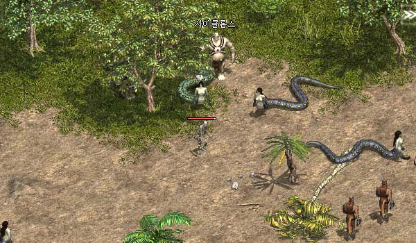
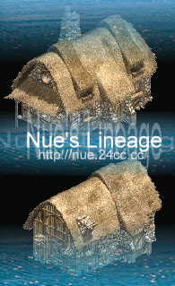

|
2002年8月3日
韓國測試伺服器8月2日更新內容 - 遺忘之島
原文：韓國天堂官方網站公告
英文翻譯：Lineage Compendium
遺忘之島(Forgotten Island)是一個給予高等級玩家冒險的地方，詳請如下：
1. 等級46或以上的玩家可以在海音碼頭以10,000天幣的價錢購買船票，這首船會載玩家往一個小島上，在這個島上會有通道前往遺忘之島。
2. 在遺忘之島上是不可以隨傳，指定傳送，設立書籤，使用回家卷或復活。
3. 在遺忘之島上所有位置均為戰鬥區域。
4. 所有在遺忘之島上的怪物大約比亞丁大陸的高15個等級。
5. 如果你在遺忘之島上死亡或重登，你將會在島的海岸上出現。你只可以透過島上西北方的NPC，或在島上中央房屋隨機出現的傳送師離開此島。
6. 在島上西北方會有一個商人會以雙倍價錢售賣有限的道具，另外亦有一個隨機出現的商人NPC。
7. 在島上的武器及防具都是被封印的，你可以使用特定道具在指定NPC中解封裝備。
8. 修正了部分錯誤。
另外以下是遺忘之島的抓圖，來自 http://www.jude1004.com/ ：

另外以下可能是遺忘之島房子的圖，來自Nue's Lineage：

|